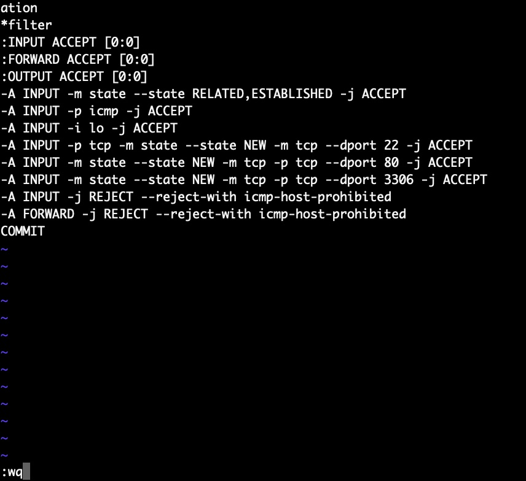
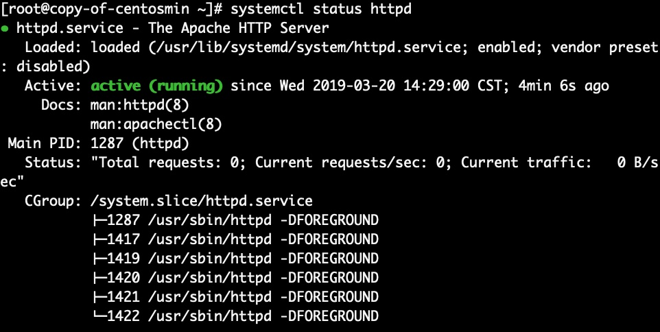
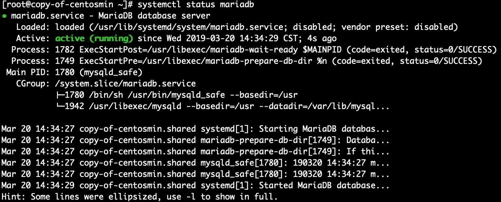
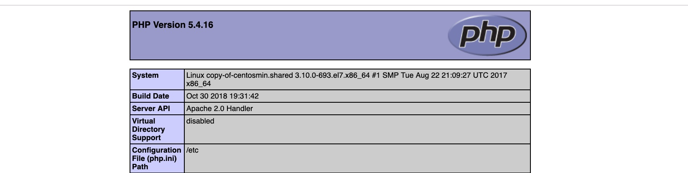
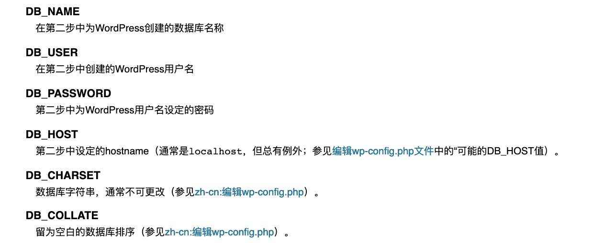
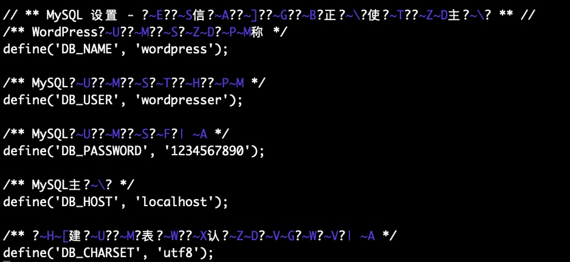
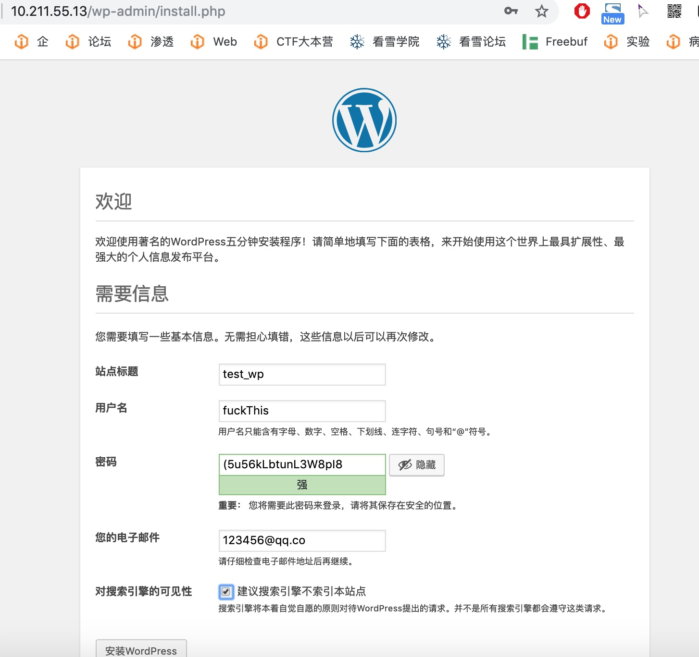
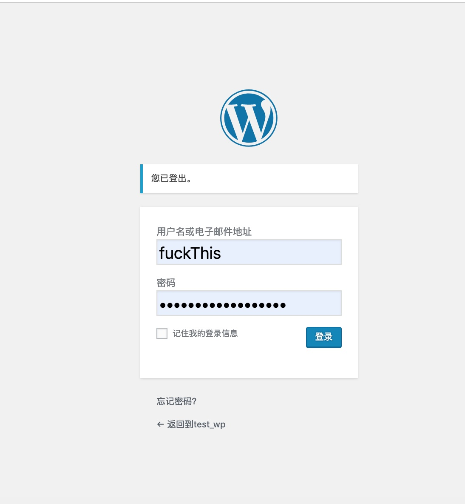
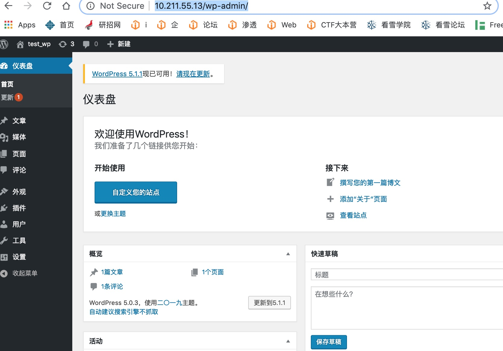
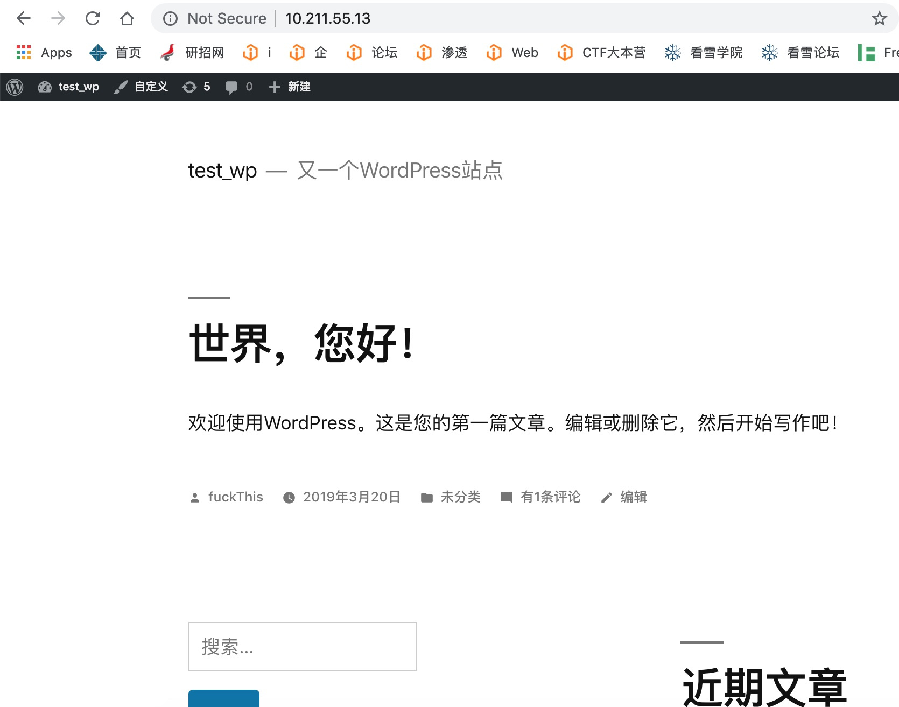

LAMP环境与WordPress博客的搭建
本文阐述了如何在 LAMP 的环境下搭建一个 WordPress 博客。
检查Apache
rpm -qa | grep httpd*
检查PHP
rpm -qa | grep php*
检查MySQL
rpm -qa | grep mysql*rpm -qa | grep mariadb*
如果有剩余版本：使用 rpm -e --nodeps xxx 一个个卸载即可
安装准备工作
1. 关闭SELinux
1 | vi /etc/selinux/config |
注：关闭SELINUX需要重启
2. 防火墙(iptables)
注：CentOS 7.0 minimal版本默认使用firewalld，可考虑更改为iptables
3. 配置防火墙，开启80，3306端口
1 | vi /etc/sysconfig/iptables |
如图：

安装Apache
1. 具体步骤yum install httpd* -y
完成后，编辑httpd.conf文件(在/etc/httpd/conf/httpd.conf下)vi /etc/httpd/conf/httpd.conf
找到 #ServerName www.example.com:80 修改为 ServerName localhost:80 ，或者设置为你自己的域名
启动 /etc/init.d/httpd start 这里我遇到一个问题 -bash: /etc/init.d/httpd: No such file or directory解决办法，先使用which查看httpd在哪: which httpd 发现在 /usr/sbin/httpd 目录下，故应该使用 /usr/sbin/httpd start 来启动，当然也可以直接使用 systemctl start httpd.service来启动
2. apache设置开机启动
启动服务：systemctl start httpd
开机启动：systemctl enable httpd
3. 查看服务状态systemctl status httpd
如图：

安装MySQL
1. 具体步骤yum install mariadb mariadb-server mariadb-libs mariadb-devel
2. 查看安装状态rpm -qa |grep maria
3. 设置开机启动
启动服务：systemctl start mariadb
开机启动：systemctl enable mariadb
4. 数据库安全设置
1 | [root@nmserver-7 ~]# mysql_secure_installation |
5. 查看状态systemctl status mariadb
图片：

6. 出现的问题
我在安装完mariaDB后，使用mysql 或者 mysql -uroot -p 或者mysqladmin -uroot password ‘newpassword’ 等都无法进入mysql，出现错误：
1 | ERROR 1045 (28000): Access denied for user 'root'@'localhost' (using password: NO) |
为什么出现这种情况？
1.可能是旧版的没卸载干净，试试旧版的密码
2.另一种可选的解决方案：Centos7 MariaDB root账户密码重置
安装PHP
1. 具体步骤yum -y install php
2. 关联php与mysqlyum install php-mysql
1 | rpm -ql php-mysql |
3. 安装常用PHP模块
1 | yum install -y php-gd php-ldap php-odbc php-pear php-xml php-xmlrpc php-mbstring php-snmp php-soap curl curl-devel php-bcmath |
4. 测试
1 | $ cd /var/www/html |
在浏览器打开: IP:PORT/info.php [此处IP是你虚拟机的IP或者localhost，端口若为默认的80，可不写]
看到如下则LAMP环境搭建完成：

下载并安装WordPress
1. 下载
我想把它下载到/tmp目录，因为这个目录时临时的，且我们一旦安装完WordPress，安装包就没用了
执行如下命令：
1 | cd /tmp |
2. 安装
a) 先解压至/var/www/html这个网页根目录
tar xvf latest-zh_CN.tar.gz -C /var/www/html
b) 此时目录结构为
1
2
3
4
5
6html
\
|index.html
|wordpress
\
wordpress网站的php文件
c) 故需要将 /var/www/html/wordpress/ 下的所有文件都复制到 /var/www/html 下，并删除空的wordpress/文件cp -r /var/www/html/wordpress/* /var/www/html/ && rm -rf /var/www/html/wordpress
3. 配置数据库
1
2
3
4
5
6
7
8
9
10
11
12
13
14
15$ mysql -u adminusername -p
Enter password:
Welcome to the MySQL monitor. Commands end with ; or \g.
Your MySQL connection id is 5340 to server version: 3.23.54
Type 'help;' or '\h' for help. Type '\c' to clear the buffer.
mysql> CREATE DATABASE databasename;
Query OK, 1 row affected (0.00 sec)
mysql> GRANT ALL PRIVILEGES ON databasename.* TO "wordpressusername"@"hostname"
-> IDENTIFIED BY "password";
Query OK, 0 rows affected (0.00 sec)
mysql> FLUSH PRIVILEGES;
Query OK, 0 rows affected (0.01 sec)
mysql> EXIT
Bye
$
4. 初始化-配置wp-config.php文件
a) 将html/目录下的 wp-config-sample.php 重命名为 wp-config.php
mv wp-config-sample.php wp-config.php
b) 找到如下选项，并配置成刚才上面设置的数据库名和用户密码

如图所示：[乱码是正常的，忽视即可！]

5. 运行安装脚本
将WordPress文件放在根目录下的用户请访问：http://yourip:port/wp-admin/install.php
我虚拟机的IP是 10.211.55.13 故访问 http://10.211.55.13/wp-admin/install.php
填写基本信息：

点击安装Wordpress

点击登录，进入后台

6. 完成效果

原文作者: pwn4justice
原文链接: https://pwn4justice.github.io/2019/03/20/LAMP环境与WordPress博客的搭建/
copyright.license: 知识共享署名-非商业性使用 4.0 国际许可协议